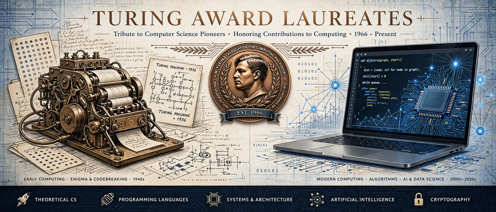

ACM A.M. Turing Award, first given 1966 to Alan Perlis; often called the Nobel Prize of computing.
The Turing Award is given by the Association for Computing Machinery (ACM) for lasting contributions to computer science, accompanied by a $1 million prize sponsored by Google.
| Year | Laureate | Work |
|---|---|---|
| 1966 | Alan Perlis | Programming languages, ALGOL |
| 1968 | Richard Hamming | Error-correcting codes |
| 1972 | Edsger Dijkstra | Structured programming |
| 1974 | Donald Knuth | Analysis of algorithms |
| 1983 | Ken Thompson, Dennis Ritchie | Unix, C |
| 1984 | Niklaus Wirth | Pascal and language design |
| 1995 | Manuel Blum | Complexity theory |
| 2000 | Andrew Yao | Computation theory |
| 2007 | Edmund Clarke, E. Allen Emerson, Joseph Sifakis | Model checking |
| 2012 | Shafi Goldwasser, Silvio Micali | Probabilistic encryption |
| 2015 | Whitfield Diffie, Martin Hellman | Public-key cryptography |
| 2017 | John Hennessy, David Patterson | RISC architecture |
| 2018 | Yoshua Bengio, Geoffrey Hinton, Yann LeCun | Deep learning |
| 2023 | Avi Wigderson | Randomness in computation |
See Turing Award and Alan Turing.